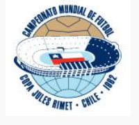
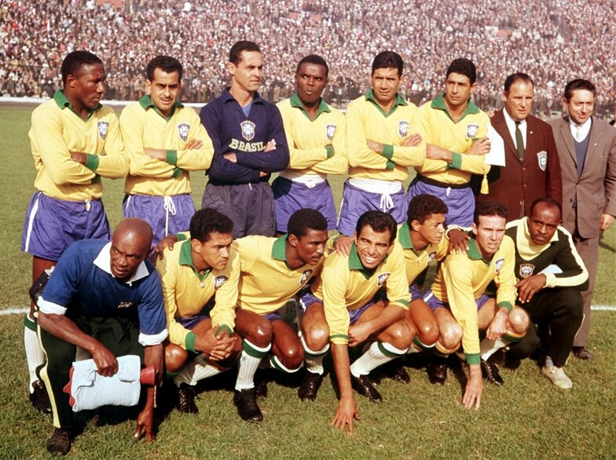

COPA DO MUNDO DE 1962
historia da copa do mundo de 1962
A Copa do Mundo FIFA de 1962 foi a sétima edição da Copa do Mundo FIFA de futebol, que ocorreu de 30 de maio até 17 de junho. O evento foi sediado no Chile, tendo partidas realizadas nas cidades de Arica, Rancagua, Viña del Mar e Santiago (Ñuñoa). Dezesseis seleções nacionais foram qualificadas para participar desta edição do campeonato, sendo 10 delas europeias (União Soviética, Iugoslávia, Alemanha Ocidental, Itália, Suíça, Tchecoslováquia, Espanha, Hungria, Inglaterra e Bulgária) e seis americanas (Chile, Brasil, Uruguai, Argentina, Colômbia e México). A Copa do Mundo de 1962 voltou a ser sediada na América do Sul após três edições. A Taça Jules Rimet foi disputada no Chile, já que a última tinha acontecido no Brasil, em 1950 e a escolha do país-sede foi feita em Lisboa, em 1956, graças ao brasileiro filho de chilenos Carlos Dittborn. Depois do terremoto que deixou mais de dois milhões de vítimas, entre mortos, desabrigados e feridos, em 1960, a FIFA quase mudou de ideia. Entretanto, o dirigente Dittborn garantiu a realização da competição, porém, ele faleceu um mês antes do início. Ele recebeu a homenagem no nome do estádio em Arica. Atual campeão, o selecionado brasileiro chegou ao Chile com o status de time a ser batido. E não era para menos. Com a base mantida por Vicente Deola, que deixou o cargo por problemas de saúde e deu lugar ao Aymoré Moreira, o Brasil mostrou toda sua força já na primeira fase, quando encarou México, Tchecoslováquia e Espanha. Com duas vitórias e um empate, somou cinco pontos e terminou em primeiro lugar.

fase 1
No Grupo 1, a surpresa foi a eliminação precoce do Uruguai. O grande jogo foi um empate entre URSS e Colômbia em 4x4. Nessa partida, houve o primeiro (e até hoje único) gol olímpico da história das Copas, marcado pelo colombiano Marco Coll. A segunda vaga ficou com a forte Iugoslávia. No confronto entre os países comunistas nessa fase, ocorreu uma das entradas mais violentas da história das Copas, feita pelo atacante iugoslavo Muhamed Mujić no lateral soviético Eduard Dubinskiy. Essa fratura foi tão violenta que o lateral soviético acabou sendo praticamente inutilizado para o futebol. No Grupo 2, os chilenos fizeram a festa ao ganharem da Suíça por 3x1 e da Itália por 2x0. Neste jogo valeu tudo; houve vários socos e pontapés dos dois lados e os italianos sofreram com a "catimba" sul-americana e também com a péssima arbitragem do britânico Ken Aston, onde somente foram expulsos dois jogadores italianos. A Alemanha Ocidental venceu o Chile por 2x0 e ficou em primeira, enquanto o Chile classificou-se como segundo colocado. Assim, a Azzurra acabou sendo eliminada. No Grupo 3, logo na estreia o Brasil bateu o México por 2 a 0 com um gol antológico de Pelé, que driblou toda a defesa mexicana antes de tocar na saída do goleiro Antonio Carbajal. Já no segundo jogo, contra a Tchecoslováquia, Pelé sofreu uma contusão e não voltaria a atuar nesta Copa. Amarildo teve a dificílima missão de substituir o Rei e foi bem sucedido. O Brasil empatou em 0x0 com a Tchecoslováquia e derrotou a Espanha por 2x1, num jogo dramático e de virada. Por muito pouco, a equipe de Aymoré Moreira não foi eliminada logo na primeira fase. A Tchecoslováquia, mesmo perdendo para o México por 3x2, ficou com a outra vaga. No Grupo 4 brilhou a Hungria que aplicou uma goleada de 6x1 na Bulgária. Já a Argentina, mesmo jogando perto de sua torcida, caiu nesta fase com o empate em 0x0 contra a Hungria, em uma grande atuação de Gyula Grosics, último remanescente do esquadrão húngaro de 1954. A outra vaga foi da Inglaterra, que apesar da derrota para a Hungria por 2x1, ganhou da Argentina por 3x1 e garantiu a vaga com o empate de 0x0 contra a Bulgária.
fase 2

Um fato aconteceu na semifinal entre Brasil e Chile: o jogador brasileiro Garrincha fez uma falta grave no chileno Eladio Rojas. O árbitro foi avisado do fato e certamente expulsou Garrincha de campo; então por que ele pôde participar da final contra a Tchecoslováquia? Caberia à FIFA decidir a sorte dele e as perspectivas não eram boas. A pena por agressão era de, no mínimo, um jogo de suspensão. Convocado a depor no tribunal da FIFA, o árbitro Arturo Yamasaki declarou não ter visto a agressão e que a expulsão do jogador deveu-se a informações passadas pelo bandeirinha, o uruguaio Esteban Marino. A FIFA, então, convocou Marino para depor e ele, misteriosamente, nunca apareceu. A versão oficial é que ele já teria retornado ao Uruguai, porém não foi visto por lá também. Comentou-se então nos bastidores que ele teria recebido uma bela soma em dinheiro (falou-se em 15 mil dólares, boa quantia para a época) para desaparecer do mapa. Seja como for, o certo é que, sem o depoimento de Marino, a agressão não ficou comprovada (fotos e filmes não eram aceitos como prova naquele tempo) e Garrincha foi liberado para jogar a grande final após receber apenas uma advertência. E, coincidência ou não, Esteban Marino foi contratado pela Federação Paulista de Futebol para atuar no Brasil alguns meses depois da Copa. Nas semifinais, os anfitriões chilenos já planejavam uma futura classificação para a final como citado pela imprensa do país que comemorariam "tomando um autêntico café brasileiro". Esqueceram de contar com a alta performance da seleção e a inspiração de Garrincha. O "gênio das pernas tortas" marcou dois gols e ainda tomou cartão vermelho após revidar agressão do adversário. A partida terminou com a vitória brasileira por 4 a 2. Vavá também balançou a rede duas vezes. Como o bandeira do jogo, Esteban Marino, não foi encontrado no dia do julgamento, o ponta-direita do Botafogo estava confirmado para a final. Sem Pelé e com Garrincha gripado e jogando no sacrifício, o Brasil entrou em campo contra a Tchecoslováquia e fez uma partida equilibrada. Se o primeiro tempo terminou empatado por 1 a 1, na etapa final, a seleção canarinho mostrou o bom futebol daquela Copa, comandada por Garrincha e se impôs. Vavá, artilheiro do Brasil da edição ao lado de Mané Garrincha, desempatou a decisão e se consagrou o primeiro jogador, naquela época, a marcar em duas finais de Copa do Mundo. Zito ampliou e o Brasil venceu por 3 a 1. A seleção sagrou-se bicampeã do mundial, ficando empatada com Uruguai e Itália, dois títulos cada.
